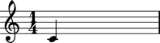
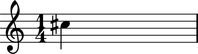

Abjad notes and chords accept all of the following as pitch input:
- Python int and long instances
- Python float instances
- Abjad
Pitchinstances
For example:
abjad> note = Note(0, (1, 4))
And:
abjad> note = Note(5.5, (1, 4))

And:
abjad> note = Note(Pitch(13), (1, 4))
The Abjad pitch token generalizes these four types of input.
Examples in the documentation that ask for valid pitch token input accept any of the types of input show here.
Abjad accepts only those
floatinstances evenly divisible by 0.5 as valid pitch token instances because Abjad implements accidental drawing symbols to the level of the quartertone only.